ANC Learn: ตัวอย่างบัญชีผู้เรียน เจ้าหน้าที่ และผู้ดูแลระบบ
ภาพจากแอปจริงที่ทดสอบในเครื่องของผู้พัฒนา ใช้บัญชีสมมุติทั้งหมด ยังไม่เปิดใช้กับผู้ป่วยจริง ขั้นตอนทั้งหมดนี้ทดสอบอัตโนมัติทุกครั้งที่แก้ไขโปรแกรม
ข้อมูลสมมุติ: ชื่อ รหัส และรหัสผ่านในภาพไม่ใช่ของบุคคลจริง
วิดีโอวิธีใช้งาน (บทที่ 0)
ขั้นตอนตั้งแต่สร้างบัญชีจนดูความคืบหน้า
ผู้ดูแลระบบ1ผู้ดูแลระบบคนแรกเข้าสู่ระบบด้วยอีเมลงานและรหัสผ่าน แล้วยืนยันตัวตนขั้นที่ 2 ด้วยแอปในมือถือ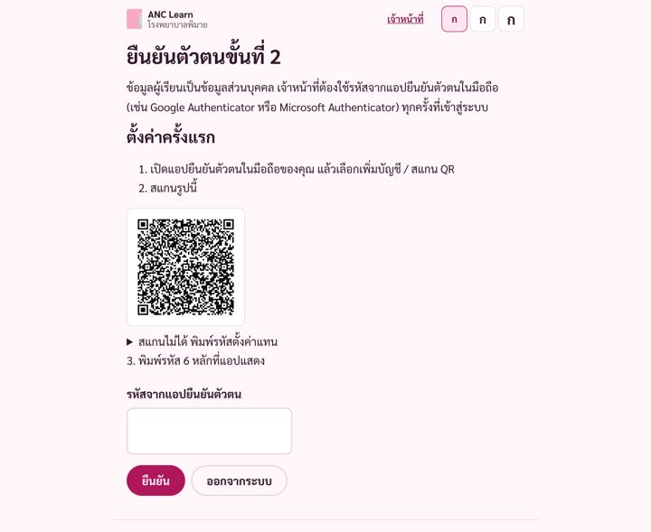
ผู้ดูแลระบบ2สร้างบัญชีพยาบาล ระบบสร้างรหัสผ่านแบบสุ่มและพิมพ์ใบรหัสให้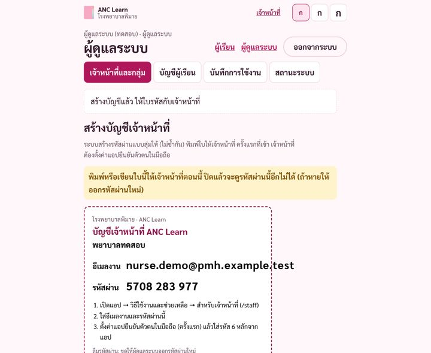
ผู้ดูแลระบบ3ให้สิทธิ์พยาบาลดูผู้เรียนในกลุ่ม “คลินิกฝากครรภ์”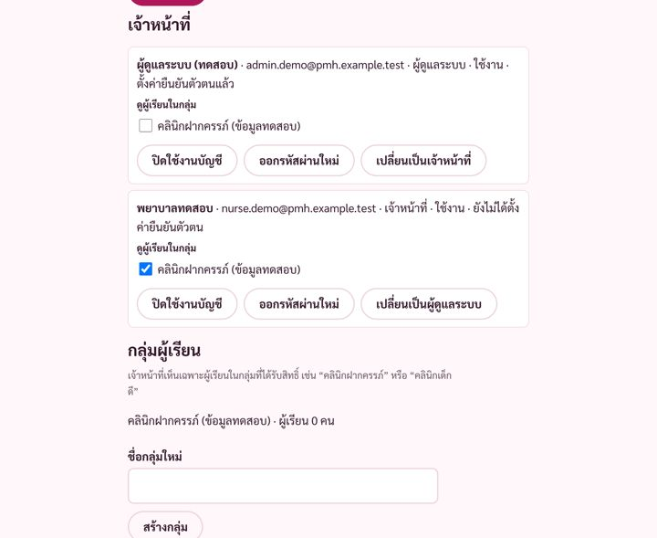
เจ้าหน้าที่4พยาบาลสร้างบัญชีผู้เรียน ได้รหัสผู้เรียน 8 หลักและรหัสผ่าน พิมพ์ใบให้ผู้เรียน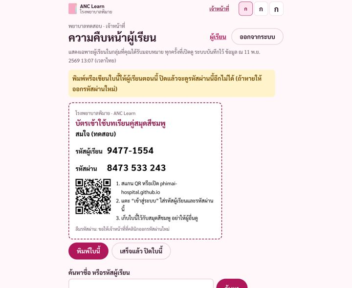
ผู้เรียน5หน้าแรก: การ์ด “เริ่มที่นี่: วิธีใช้งาน” อยู่บนสุด เรียนได้ทุกบทโดยไม่ต้องเข้าสู่ระบบ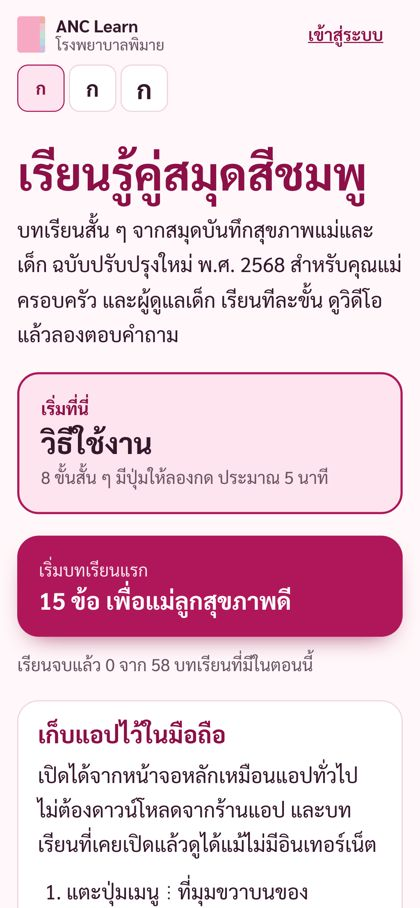
ผู้เรียน6เข้าสู่ระบบด้วยรหัสผู้เรียนและรหัสผ่านจากใบ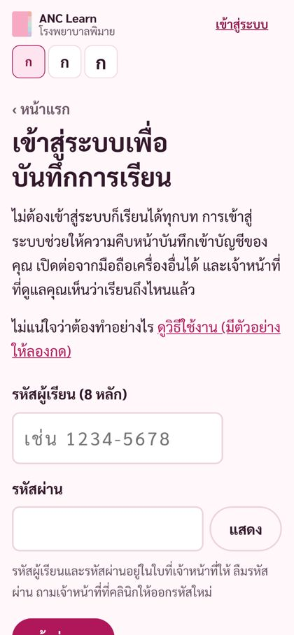
ผู้เรียน7วิธีใช้งาน (บทที่ 0): ฝึกเข้าสู่ระบบด้วยใบตัวอย่าง มีวิดีโอสอนวิธีใช้ 88 วินาที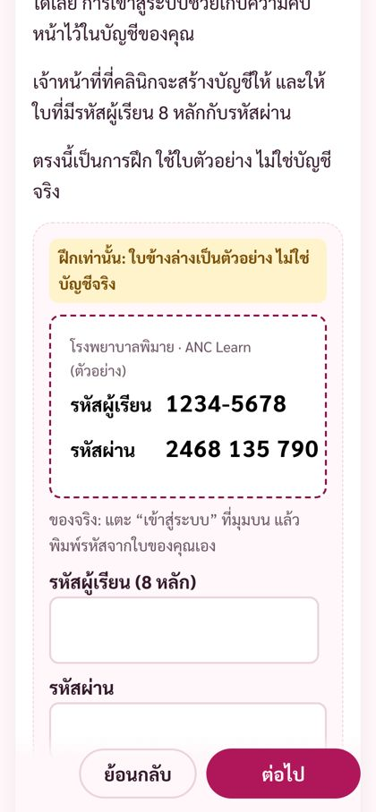
ผู้เรียน8เรียนบทเรียน ตอบคำถาม ตอบผิดได้ ลองใหม่ได้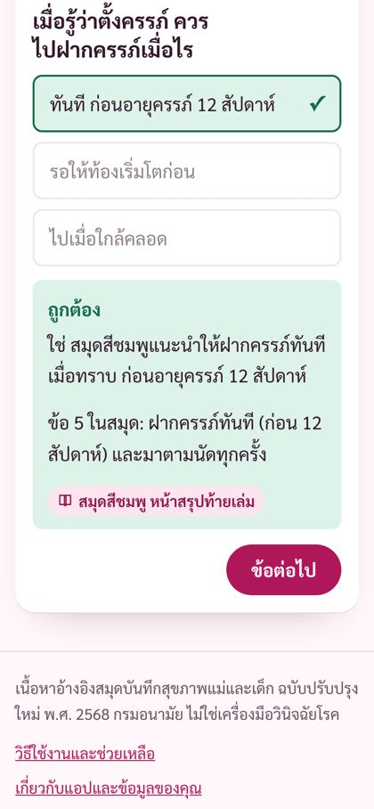
ผู้เรียน9ความคืบหน้าบันทึกเข้าบัญชี เปิดจากมือถือเครื่องอื่นก็เห็น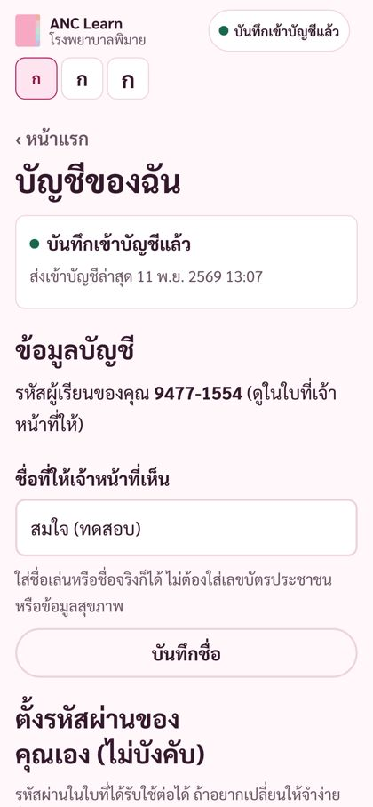
เจ้าหน้าที่10พยาบาลเห็นรายชื่อผู้เรียนในกลุ่ม เรียงตามวันที่สร้างบัญชี ใหม่สุดก่อน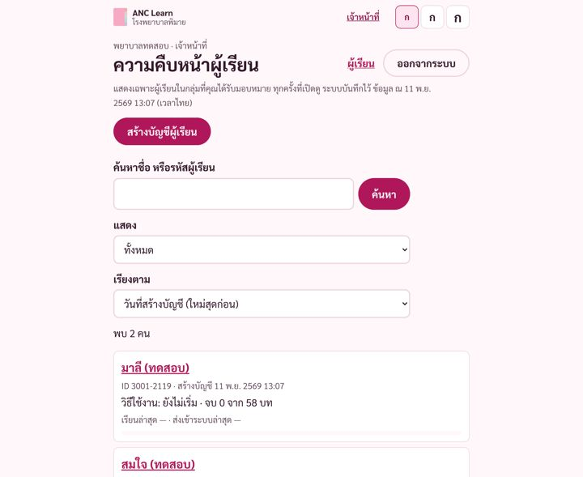
เจ้าหน้าที่11เปิดดูรายบทเรียน: จบแล้ว / ค้าง / ยังไม่เริ่ม และข้อที่อาจต้องอธิบายเพิ่ม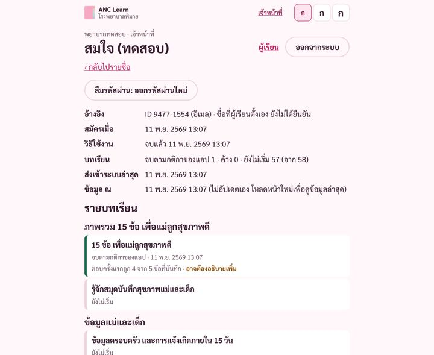
ผู้ดูแลระบบ12จัดการบัญชีผู้เรียน: จัดกลุ่ม ปิดใช้งาน หรือลบบัญชี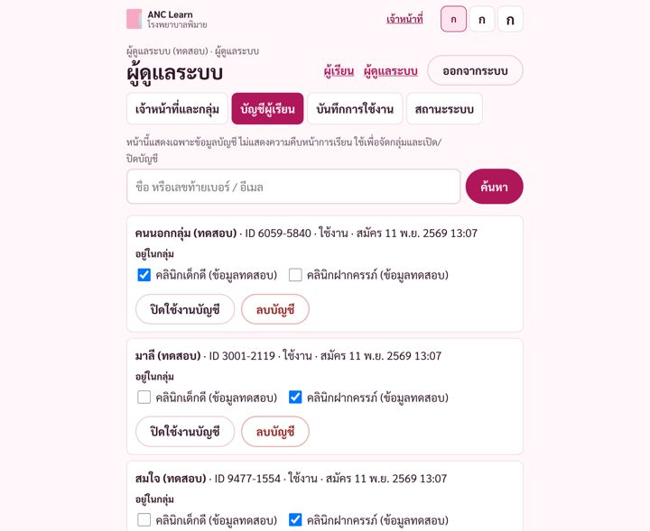
ผู้ดูแลระบบ13บันทึกการใช้งาน: ใครสร้างบัญชี ใครเปิดดูข้อมูล แก้ไขหรือลบไม่ได้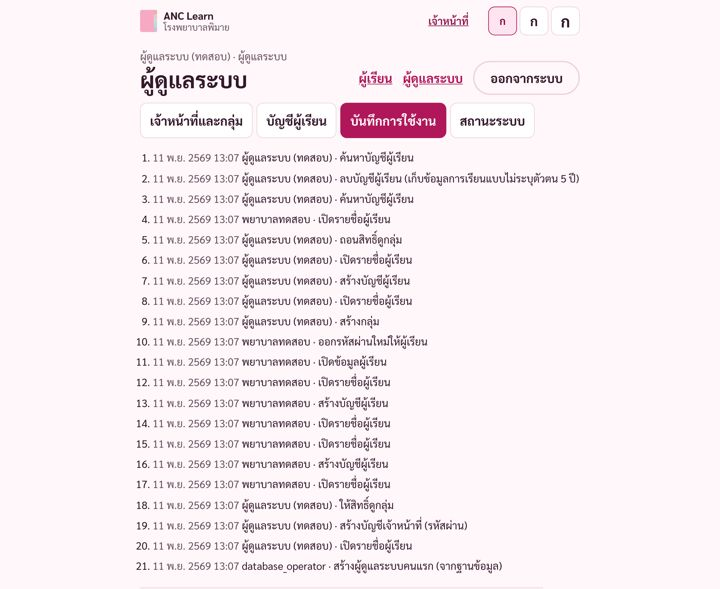